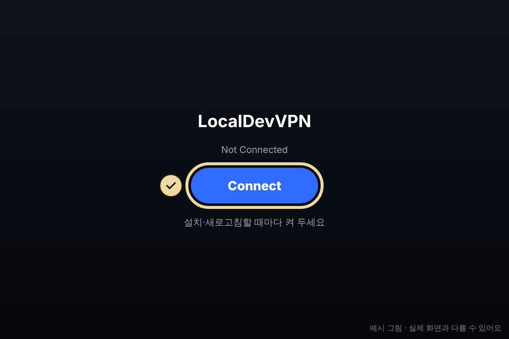
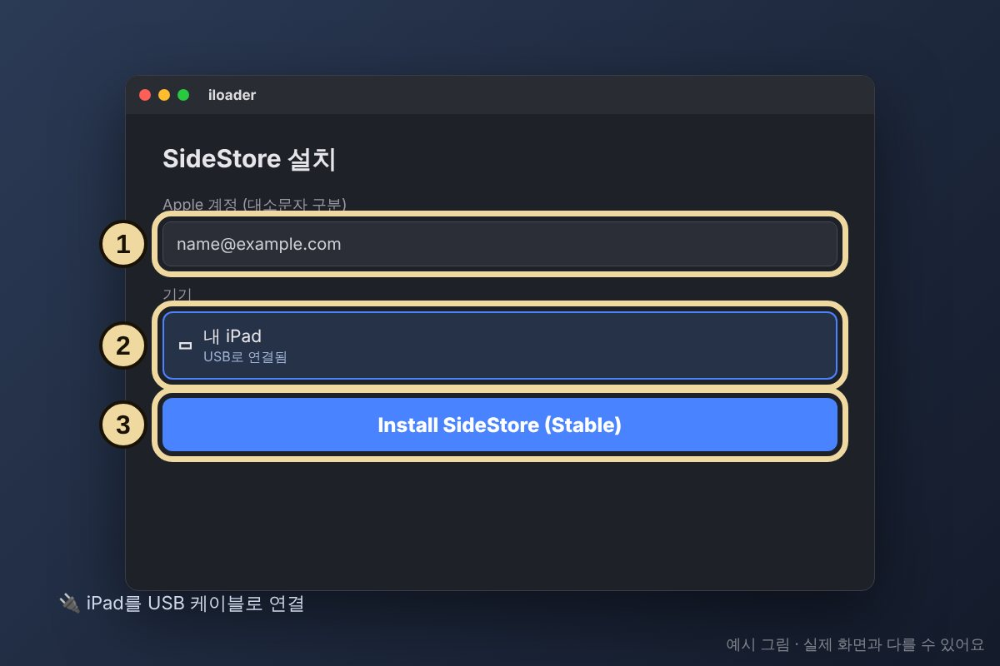
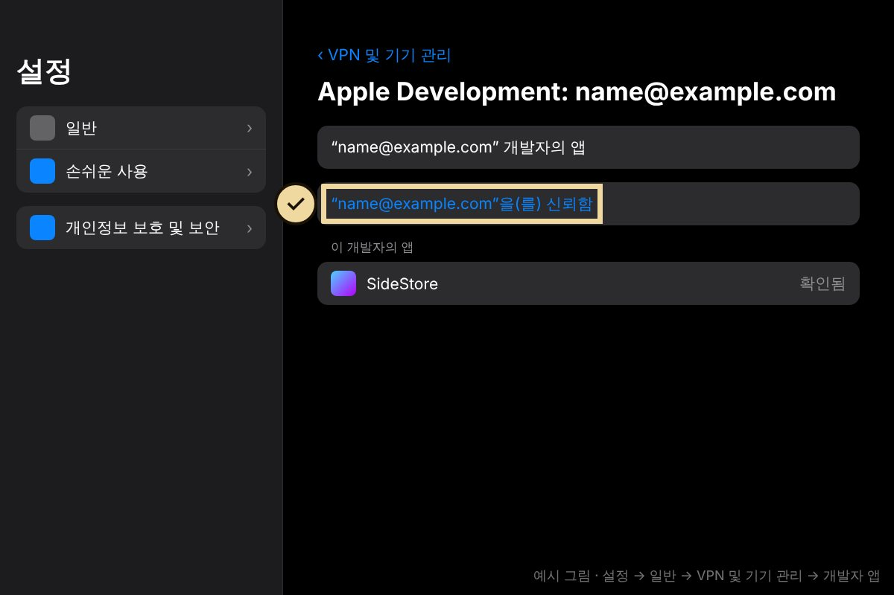
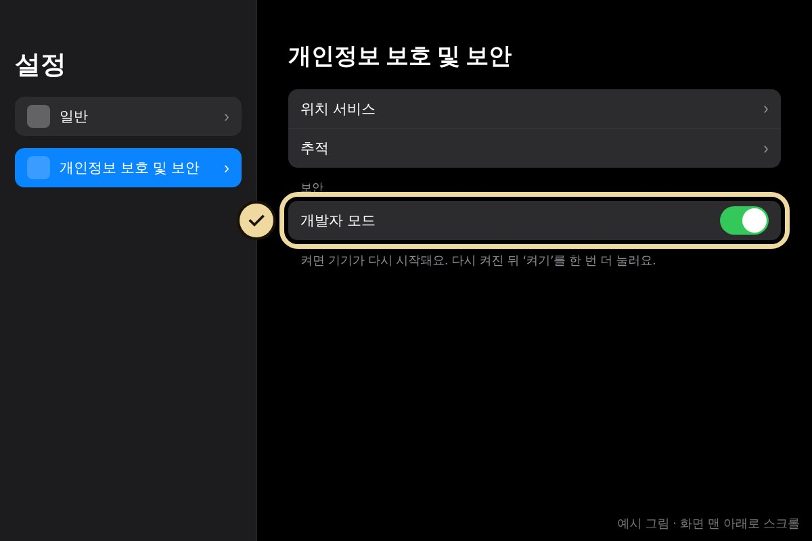
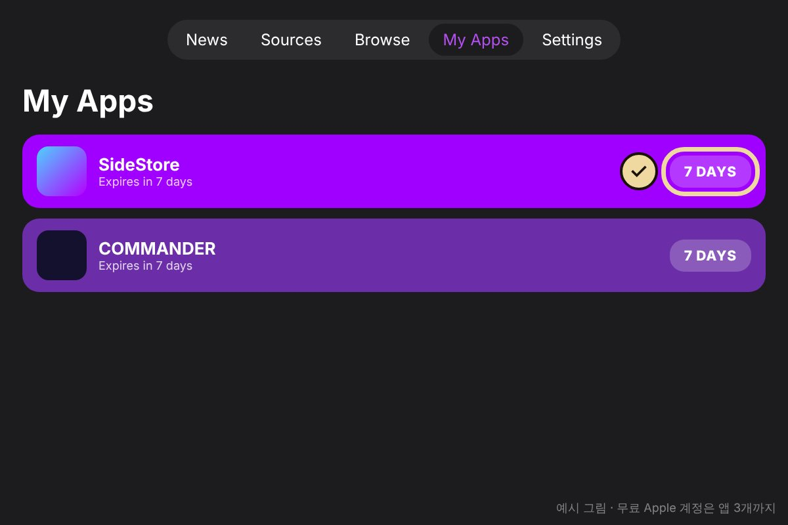
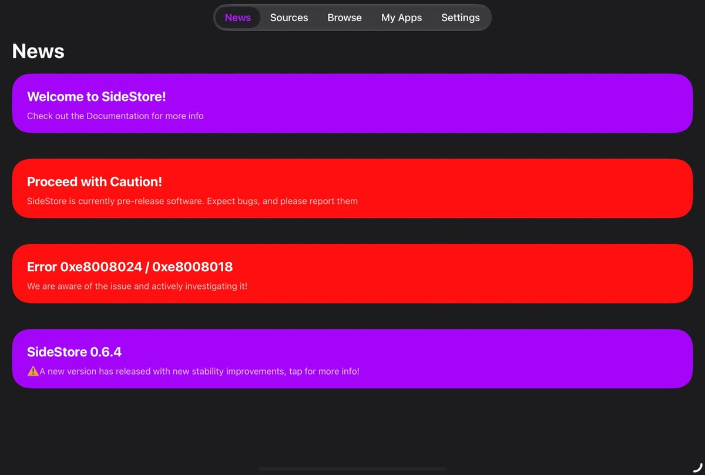
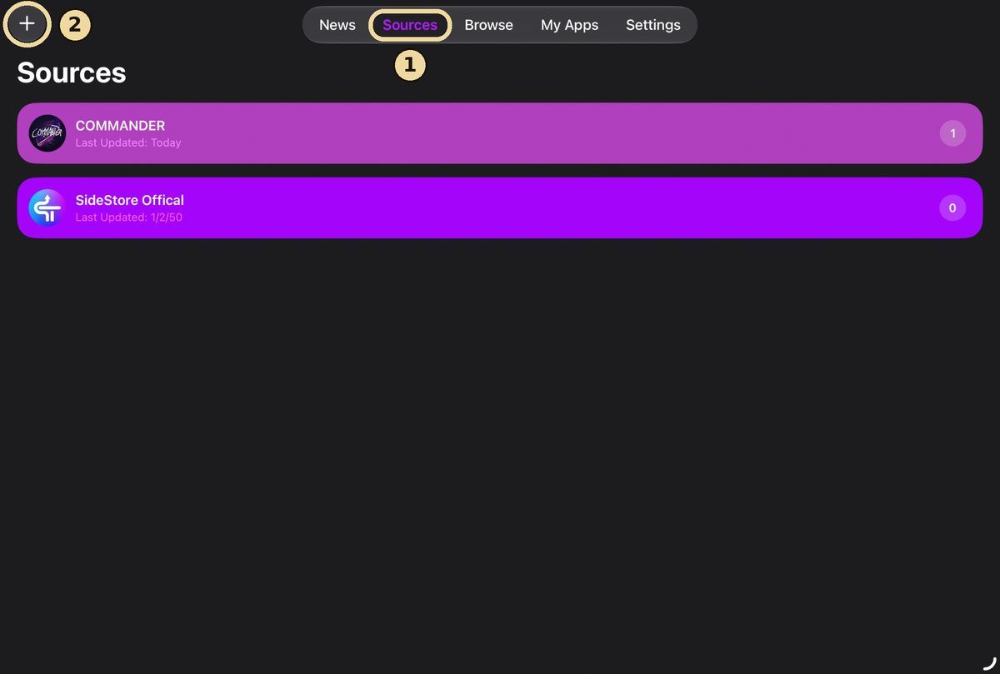
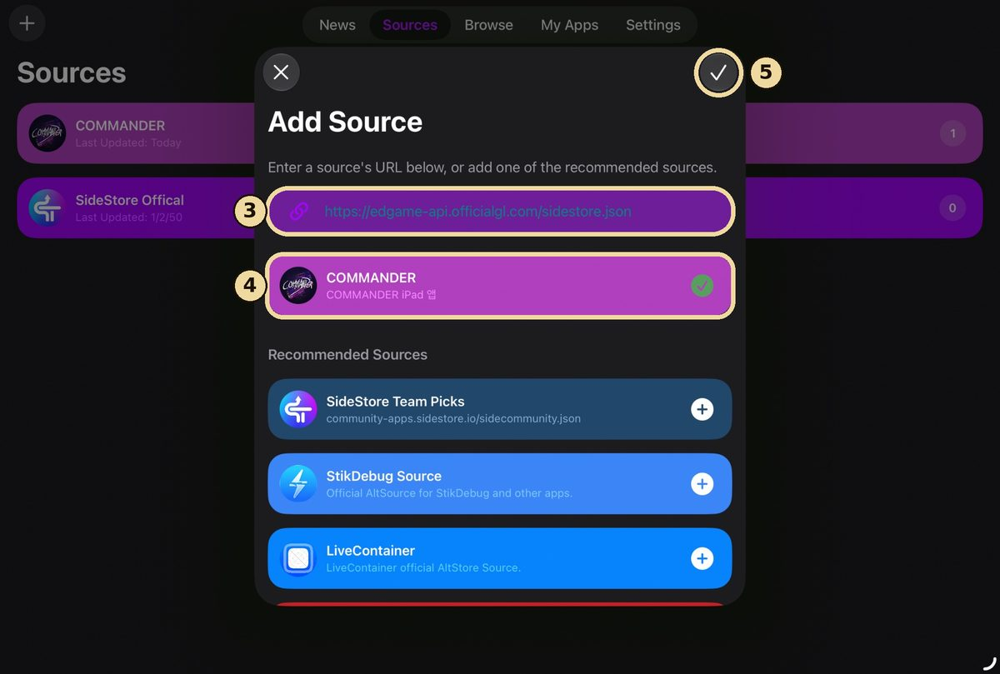
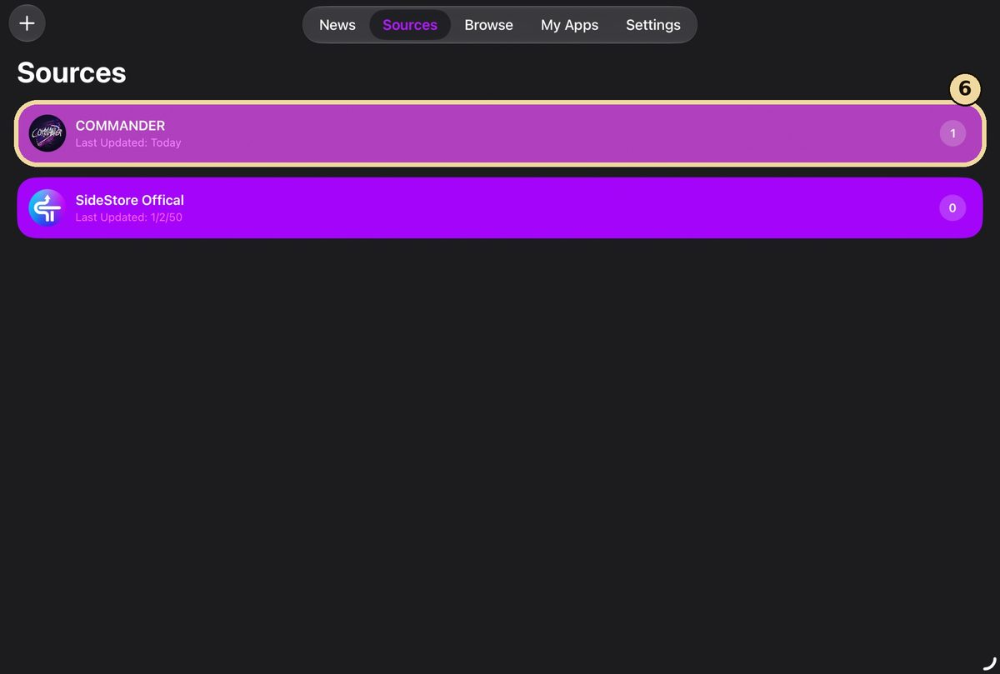

COMMANDER 설치 안내
체스판 자동 전투 · 2인 실시간 대전
브라우저로 바로 하기 가장 쉬움
설치할 것이 없어요. PC, 맥, 아이패드, 안드로이드 모두 됩니다.
- Chrome, Safari, Edge 같은 최신 브라우저에서 아래 주소를 엽니다.
- GL 계정으로 로그인하거나, 이름만 적고 시작해요. (게스트 방은 학번과 이름으로 들어가요)
https://edgame-api.officialgl.com폰·태블릿에서는 브라우저의 홈 화면에 추가를 쓰면 앱처럼 아이콘에서 바로 열 수 있어요. (Safari: 공유 → 홈 화면에 추가, Chrome: ⋮ → 홈 화면에 추가) 게임은 가로 화면에서 가장 잘 보여요.
iPad · iPhone 앱 iPadOS·iOS 17 이상
앱 스토어 앱이 아니라서 내 Apple 계정으로 서명해서 설치해요. SideStore를 한 번 설치해 두면 그다음부터는 iPad에서 바로 설치·업데이트할 수 있어요.
1준비물
- 잠금 암호가 설정된 iPad·iPhone (COMMANDER는 iPadOS·iOS 17 이상)
- 컴퓨터 한 대: 윈도우(64비트), 맥, 리눅스, 크롬북 중 하나. 처음 설치할 때만 필요해요.
- Apple 계정 (기기에 로그인된 계정이 아니어도 돼요)
- USB 케이블, 그리고 와이파이 (모바일 데이터로는 안 돼요)
2iPad에 VPN 앱 설치
SideStore는 기기 안의 VPN으로 설치·새로고침을 해요.
- App Store에서 LocalDevVPN을 설치해요.
- 앱을 열고 Connect를 눌러요.
- "VPN 구성 추가"를 물으면 허용을 누르고 암호를 넣어요.
앱을 설치·업데이트·새로고침할 때는 항상 이 VPN이 켜져 있어야 해요.

3컴퓨터에서 SideStore 설치 (iloader)
컴퓨터에 iloader를 설치해요.
- 맥: iloader (.dmg)
- 윈도우: 먼저 Apple 홈페이지의 iTunes를 설치하고, iloader (.msi)
- 리눅스:
usbmuxd를 설치하고 .deb · .rpm · AppImage
- iPad를 USB 케이블로 연결해요. iPad에서 "이 컴퓨터를 신뢰하겠습니까?"가 나오면 신뢰 → 암호.
- iloader를 열고 Apple 계정으로 로그인해요. (대소문자를 구분해요)
- 목록에서 내 iPad를 골라요.
- Install SideStore (Stable)을 눌러요.

4iPad에서 마무리
- 설정 → 일반 → VPN 및 기기 관리로 가요.
- "개발자 앱"에서 내 Apple 계정을 누르고 "(계정)을(를) 신뢰함" → 신뢰. (iPadOS 18 이상은 허용 및 재시동이 나오면 누르고 암호를 넣어요)

- 설정 → 개인정보 보호 및 보안 맨 아래의 개발자 모드를 켜요. 기기가 다시 켜지면 켜기를 한 번 더 누르고 암호를 넣어요.

- LocalDevVPN을 열고 Connect.
- SideStore를 열고 iloader에서 쓴 같은 Apple 계정으로 로그인해요.
- My Apps 탭에서 SideStore 오른쪽의 7 DAYS를 눌러 새로고침해요.
- 서명 인증서를 새로 만들지 물으면 Yes 또는 Refresh Now.
잘 되면 SideStore가 잠깐 홈 화면으로 나갔다가(알림이 와요) 몇 초 뒤 다시 열 수 있어요.


5COMMANDER 소스 추가하고 설치
이 iPad에서 버튼 하나로 추가할 수 있어요. (SideStore가 설치되어 있어야 해요)
버튼이 안 되면 주소를 복사해서 직접 넣어요:



- Browse 탭(또는 목록의 COMMANDER)에서 COMMANDER를 찾아 설치 버튼을 눌러요. LocalDevVPN이 켜져 있어야 해요.
- 새 버전이 나오면 SideStore의 My Apps에 업데이트가 떠요.
67일마다 새로고침
- 무료 Apple 계정으로 서명한 앱은 7일이 지나면 열리지 않아요. 그 전에 LocalDevVPN을 켜고 SideStore My Apps에서 남은 날짜(예: 3 DAYS)를 누르면 다시 7일이 돼요.
- 무료 계정은 SideStore를 포함해 앱 3개까지 설치돼요.
- 전적은 서버에 있어서 다시 설치해도 그대로예요.
- iPad를 업데이트하거나 초기화하면 페어링 파일이 만료될 수 있어요. 컴퓨터의 iloader에서 Delete Stored Pairing → 기기를 눌러 iPad에서 신뢰 → Manage Pairing File → SideStore 옆 Place.
SideStore 없이 컴퓨터로만 설치하기 (Sideloadly)
- 위의 .ipa 받기로
Commander.ipa를 컴퓨터에 받아요. - Sideloadly를 설치하고 iPad를 케이블로 연결해요.
- ipa 파일을 끌어다 놓고, Apple 계정을 적고 Start.
- iPad에서 4단계의 개발자 앱 신뢰와 개발자 모드를 해요.
- 7일마다 컴퓨터에서 같은 방법으로 다시 설치해요.
COMMANDER를 처음 열면
- 서버 주소는 공식 서버가 기본이에요. 로그인하기를 누르면 브라우저가 열려요. 로그인하고 로그인 확인을 누른 뒤 앱으로 돌아오면 돼요.
- 친구가 연 로컬 서버는 서버 화면의 QR을 카메라로 찍거나, 같은 와이파이면 서버 입력칸 아래 목록에서 골라요.
그림 중 아이패드 설정·iloader·VPN 화면은 이해를 돕기 위한 예시 그림이라 실제 화면과 조금 다를 수 있어요. 자세한 내용은 SideStore 공식 설치 안내를 참고하세요.
안드로이드 8.0 이상
Play 스토어 앱이 아니라서 APK 파일을 받아 설치해요. 컴퓨터는 필요 없어요.
- 폰의 Chrome에서 위 버튼을 누르고, 가장 위 COMMANDER Android 릴리스의
Commander-버전.apk를 받아요. - 다운로드가 끝나면 파일을 열어요. "출처를 알 수 없는 앱" 안내가 나오면 설정 → 이 출처 허용을 켜고 돌아와요.
- 설치를 누르고, Play 프로텍트가 물으면 무시하고 설치(또는 설치)를 눌러요.
- COMMANDER를 열고 공식 서버를 누르면 시작해요. 같은 와이파이의 로컬 서버는 목록에 뜨거나 QR 찍기로 들어가요.
게임 화면은 Android System WebView(또는 Chrome) 111 이상에서 제대로 보여요. 오래됐으면 앱이 업데이트를 안내해요: Play 스토어에서 "Android System WebView"를 업데이트하세요. 새 버전은 같은 방법으로 받은 APK를 덮어 설치하면 돼요(전적은 서버에 있어요).
내 서버 열기 선택
인터넷이 없거나 우리끼리만 할 때, PC 한 대를 서버로 켜고 같은 와이파이에서 접속해요. 전적은 그 PC에 남아요.
가장 위의 COMMANDER 서버 릴리스에서 내 컴퓨터에 맞는 파일을 받아요. 윈도우는 commander-server-windows.exe, 맥은 commander-server-macos-apple-silicon(M1 이후) 또는 -macos-intel, 우분투는 .deb. 이름에 expert가 붙은 파일은 콘텐츠 팩을 읽는 엑스퍼트 서버예요.
윈도우
commander-server-windows.exe를 원하는 폴더에 두고 실행해요. 데이터는 옆의commander-data폴더에 쌓여요.- "Windows의 PC 보호" 창이 뜨면 추가 정보 → 실행.
- 방화벽이 물으면 허용 (폰이 서버를 찾으려면 필요해요).
맥
- 터미널에서 받은 폴더로 가서 처음 한 번 잠금을 풀고 실행 권한을 줘요:
xattr -d com.apple.quarantine ./commander-server-macos-apple-siliconchmod +x ./commander-server-macos-apple-silicon ./commander-server-macos-apple-silicon로 실행해요. (인텔 맥은-macos-intel)
우분투
sudo apt install ./commander-server_*.deb- 앱 메뉴의 COMMANDER 서버를 눌러요. 접속 화면(QR)이 열려요.
안드로이드 폰을 서버로 시험판
안드로이드 릴리스의 CommanderServer-버전.apk를 설치하고(설치 방법은 게임 앱과 같아요) 서버 켜기를 누르세요. 화면에 나온 주소나 QR로 접속해요. 앱을 내려도 알림이 떠 있는 동안 서버는 켜져 있어요.
iPhone·iPad를 서버로 시험판
SideStore에 COMMANDER 소스를 추가했다면(5단계) 소스 목록에 COMMANDER 서버 앱도 있어요. 설치하고 서버 켜기를 누른 뒤 로컬 네트워크 권한을 허용하면, 같은 와이파이(또는 그 아이폰의 개인용 핫스팟)의 다른 기기가 QR이나 서버 목록으로 접속할 수 있어요.
- 서버 앱은 화면에 켜 둔 채로 두세요. 다른 앱으로 가면 iOS가 서버를 멈춰요. 그 기기에서 같이 하려면 서버 앱의 이 기기에서 하기를 누르세요.
- 아이폰은 오래 켜 두면 배터리를 많이 써요. 충전기에 꽂아 두세요.
- 무료 Apple 계정은 앱 3개까지라 SideStore·COMMANDER·COMMANDER 서버를 함께 쓰면 꽉 차요. 서버로만 쓰는 아이폰에는 COMMANDER 서버만 설치해도 돼요.
접속하기
- 서버를 켜면 화면에
http://IP주소:8787과 QR이 나와요. 같은 화면은 서버 PC의http://localhost:8787/connect에도 있어요. - 브라우저: 그 주소를 그대로 열어요. 앱: QR을 찍거나 같은 와이파이 목록에서 골라요.
- 로컬 서버는 로그인 없이 이름만 써요. 이름이 같으면 같은 사람으로 전적이 이어져요.
문제가 있을 때
앱을 열면 바로 꺼져요
무료 Apple ID 서명이 7일이 지나 만료됐어요. SideStore에서 Refresh 하거나 Sideloadly로 다시 설치하세요. 개발자 모드가 꺼져 있어도 열리지 않아요.
"신뢰하지 않는 개발자"라고 나와요
설정 → 일반 → VPN 및 기기 관리에서 내 Apple ID를 신뢰로 바꿔 주세요.
SideStore에 소스가 추가되지 않아요
"주소 복사"로 주소를 복사한 뒤 SideStore의 Sources 탭 → 왼쪽 위 ＋ 에 직접 붙여 넣어 보세요. (그림 보기) SideStore가 설치되지 않은 기기에서 "SideStore에 소스 추가" 버튼을 누르면 아무 일도 일어나지 않거나 오류가 나요.
SideStore에서 설치·새로고침이 안 돼요
LocalDevVPN이 연결되어 있는지 먼저 확인하세요. iPad를 업데이트했다면 페어링 파일이 만료됐을 수 있어요: 6단계의 방법으로 iloader에서 페어링 파일을 다시 넣어 주세요. 그래도 안 되면 SideStore 문제 해결을 보세요.
같은 와이파이인데 서버가 목록에 안 보여요
- 폰과 서버 PC가 정말 같은 와이파이인지 확인해요. (게스트 와이파이는 기기끼리 막혀 있기도 해요)
- 서버 PC의 방화벽에서 8787(TCP)과 5353(UDP)을 열어요. 목록에 없어도 주소를 직접 적거나 QR을 찍으면 돼요.
- iPad 앱은 처음에 로컬 네트워크 권한을 물어요. 거절했다면 설정 → COMMANDER에서 켜 주세요.
화면이 깨져 보여요
브라우저를 최신으로 업데이트해 주세요. 아주 오래된 브라우저에서는 일부 색과 배치가 맞지 않을 수 있어요.
문의하기 채팅
설치가 안 되거나 궁금한 점을 남겨 주세요. 운영자가 답하면 이 페이지에 나타나요.
대화는 이 브라우저에 저장돼요. 다른 기기에서 이어 보려면 대화 주소 복사로 주소를 옮겨 주세요. 비밀번호나 Apple 계정 암호는 적지 마세요.